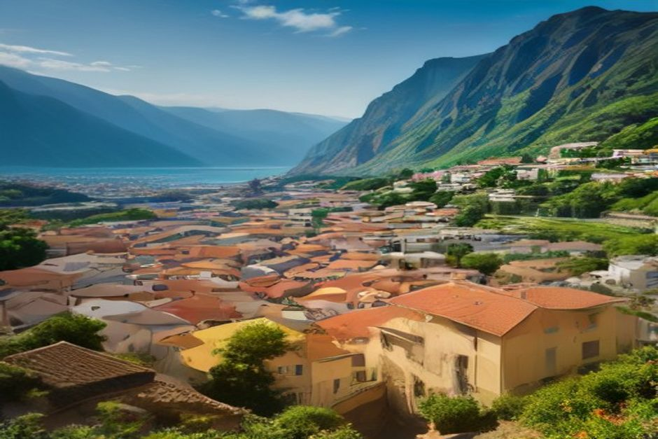
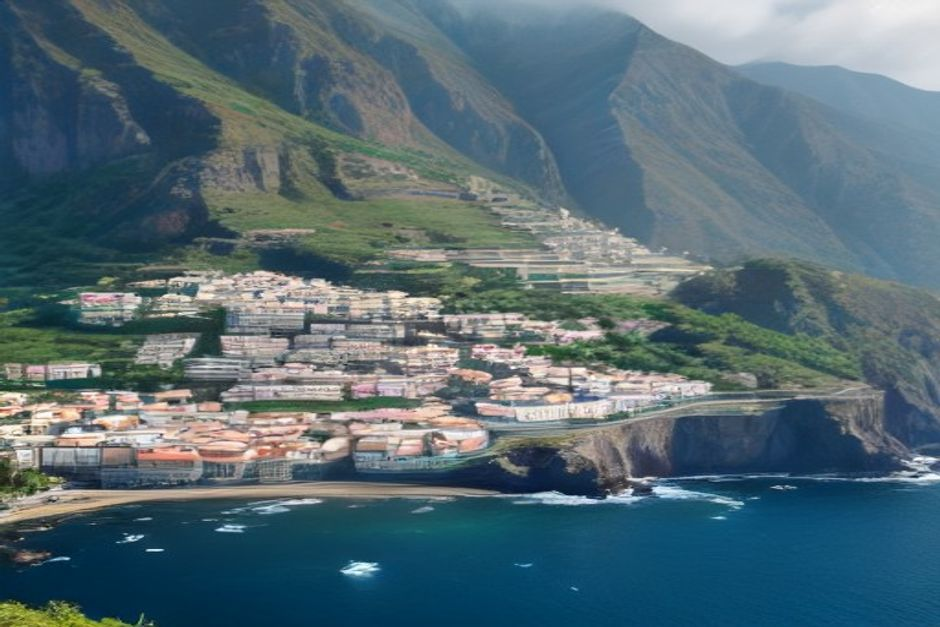

Quels sont les plus beaux villages de Madère ? Tout dépend de ce que vous cherchez : un port de pêche, une baignade, des maisons de conte de fées ou un village caché dans un cratère. Voici dix villages, rangés par côte plutôt que par note, pour que vous puissiez composer des journées cohérentes au lieu de rouler pour rien.
Avant de choisir : une île, trois ambiances
Madère est petite sur la carte, mais les routes de montagne, les tunnels et les virages rallongent les trajets. Mieux vaut penser en zones.
- La côte sud : les villages de pêcheurs, les cafés, les petits ports. C'est la plus facile d'accès depuis Funchal.
- La côte nord : plus sauvage, plus verte, avec les piscines naturelles et les maisons traditionnelles.
- L'intérieur et l'est : un village au fond d'un cratère et le plus ancien point peuplé de l'île.
Notre conseil : trois ou quatre villages par journée, pas plus. Au-delà, la visite se transforme en succession de parkings. Gardez aussi en tête qu'un même jour ne permet pas de tout faire : mieux vaut une côte à fond que l'île entière au pas de course.
Côte sud : les plus beaux villages de Madère près de Funchal
Câmara de Lobos, le port de pêche que Churchill a peint
C'est le village que l'on voit sur les cartes postales, et il le mérite. Sable volcanique noir, maisons de pêcheurs empilées, barques colorées : c'est un vrai port en activité. Les bateaux à espada, qui pêchent le poisson-sabre noir, y sortent encore de nuit.
Winston Churchill y a peint la falaise en 1950, et le miradouro qui porte son nom offre toujours la même vue. Le village est à dix minutes en mer de la marina de Funchal : c'est la première étape de notre sortie privée à la journée.

Ribeira Brava, pour se baigner et déjeuner au bord de l'eau
Ribeira Brava s'étend là où une rivière rejoint la mer. Sa plage de galets est assez calme pour nager, et son église São Bento, du XVIe siècle, se reconnaît à son dôme pyramidal en tuiles. Le village se trouve à peu près à mi-chemin sur la route de la côte sud : c'est l'endroit idéal pour une pause déjeuner face à l'eau.
Ponta do Sol, le village le plus ensoleillé de l'île
Ponta do Sol est l'endroit de Madère où le soleil brille le plus longtemps, ce qui explique pourquoi les télétravailleurs s'y installent. Une petite jetée, une crique de sable noir et quelques bons cafés suffisent à justifier une heure d'arrêt, même sans y dormir. C'est aussi le point le plus éloigné de notre sortie prolongée de 3 heures.
Calheta, la plage de sable doré (importé)
Le littoral de Madère est surtout fait de galets et de roche. À Calheta, on a fait venir du sable doré du Maroc pour créer la plage que l'île n'offrait pas naturellement. Le village possède aussi une petite marina et un centre culturel moderne, la Casa das Mudas.
Il se trouve à l'extrémité ouest de la côte sud, à près d'une heure de Funchal : prévoyez-y une vraie excursion, pas un simple arrêt.
Côte nord : piscines naturelles et maisons au toit de chaume
Porto Moniz, des piscines creusées dans la lave
Ici, pas de plage. Les vagues de l'Atlantique remplissent des piscines naturelles taillées dans la roche volcanique, et c'est toute la raison de la visite. Le village est à la pointe nord-ouest de l'île, à environ une heure et demie de Funchal par la route côtière. Les piscines sont les plus fréquentées, et les plus chaudes, en début d'après-midi.
Seixal, la baignade plus tranquille
Si Porto Moniz est trop animé, Seixal offre les piscines naturelles les plus calmes de la côte nord, assez abritées pour se baigner dans des conditions qui feraient fermer celles de Porto Moniz. Derrière le village, des terrasses de bananiers grimpent sur le versant. Juste avant d'arriver, la cascade Véu da Noiva tombe sur la route côtière.
São Vicente, des tunnels de lave dans un ravin vert
On s'arrête à São Vicente pour les Grutas de São Vicente, des tunnels de lave nés d'une éruption il y a environ 890 000 ans, et pour le décor du ravin : escarpé, verdoyant, bien plus resserré que la côte sud. C'est l'étape naturelle du milieu si vous faites toute la côte nord dans la journée.
Santana, les maisons triangulaires aux portes colorées
Santana est célèbre pour ses palheiros : des maisons triangulaires au toit de chaume, aux portes peintes de couleurs vives, réellement habitées jusqu'à il y a quelques décennies. Quelques-unes subsistent dans un petit musée en plein air à l'entrée du village. Chaque année en septembre, la paroisse voisine accueille la Festa do Faial, l'une des plus anciennes fêtes religieuses de la côte nord.
Intérieur et est : un cratère et un point de départ historique
Curral das Freiras, le village au fond d'une caldeira
Le village repose au fond d'une caldeira volcanique effondrée. On y arrive par une route qui traverse la montagne en tunnel, et le point de vue d'Eira do Serrado embrasse toute la vallée depuis les hauteurs. Au XVIe siècle, des religieuses d'un couvent de Funchal s'y réfugièrent pour échapper aux pirates : le nom signifie « le corral des nonnes ».
Les châtaignes, cultivées sur les pentes au-dessus du village, se retrouvent partout, de la soupe à la liqueur.
Machico, là où les premiers colons ont débarqué
C'est à Machico que l'expédition de João Gonçalves Zarco a accosté en 1419, ce qui en fait le plus ancien point peuplé de l'île. On y trouve l'une des rares plages de sable de Madère, bordée d'une promenade et d'un petit fort. Le village est à cinq minutes de l'aéroport : une étape facile le jour d'arrivée ou de départ.
Comment les enchaîner sans y passer la journée en voiture
Quelques combinaisons qui tiennent la route :
- Journée côte sud : Câmara de Lobos, Ribeira Brava, Ponta do Sol. Trois villages proches, avec de quoi déjeuner et se baigner.
- Journée côte nord : São Vicente, Seixal, Porto Moniz, puis Santana si vous avez de la marge. Partez tôt.
- Demi-journée : Curral das Freiras et son belvédère, ou Machico avant de prendre l'avion.
Pour les piscines naturelles, évitez de décider à la dernière minute : la mer du nord peut être agitée, et l'accès aux piscines dépend des conditions du jour.
Voir les villages depuis la mer
La route relie les villages, mais l'eau explique pourquoi chacun est là où il est : une baie abritée, une falaise, une embouchure de rivière. Sur la côte sud, Câmara de Lobos, Ribeira Brava et Ponta do Sol sont accessibles en bateau depuis Funchal, sans un seul virage en épingle.
C'est ce que propose notre sortie à la journée. Le bateau est privé : un seul groupe, jusqu'à 5 personnes, deux skippers de Madère. Départ à 10 h 00 ou à 14 h 00 depuis la Marina do Funchal, ponton C.
- 2 h 30 jusqu'à Ribeira Brava : 500 EUR pour tout le bateau.
- 3 h avec Ponta do Sol : 600 EUR pour tout le bateau.
Au programme : Câmara de Lobos, Cabo Girão, une baignade et des paddles à la Fajã dos Padres. Nourriture et boissons sont à bord, ainsi qu'une vidéo 360° Insta360, des images de drone (si la météo le permet) et des photos prises avec un vrai appareil. Annulation gratuite jusqu'à 24 heures avant le départ.

La route relie les villages. L'eau vous montre pourquoi chacun se trouve là où il est.
Moins de temps, ou envie d'un autre moment de la journée ? La sortie coucher de soleil part 1 h 15 avant le coucher du soleil, toute l'année : 2 h jusqu'à Cabo Girão pour 400 EUR, ou 2 h 30 jusqu'à Ribeira Brava pour 500 EUR, sans arrêt baignade. Pour comparer toutes les options, consultez nos sorties en bateau à Madère ou les infos pratiques.